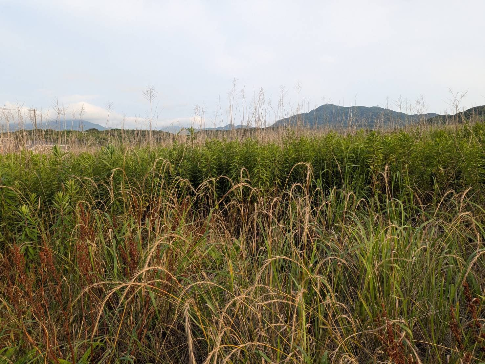

CASE 01｜草刈り
背丈まで伸びた草むらが、ここまでスッキリ！
長期間手つかずで、大人の背丈ほどまで草が伸びてしまった土地です。刈払機（草刈り機）を使って広範囲を一気に刈り取り、奥まで見通せるスッキリとした状態になりました。
刈払機による機械刈り広範囲の草刈り空き地・遊休地
担当者よりここまで草が伸びると、ご自身での作業は体力的にも大変ですし、虫や蛇などの危険もあります。「もう手が付けられない…」という状態でも大丈夫。プロの機材で一気に解決いたします。